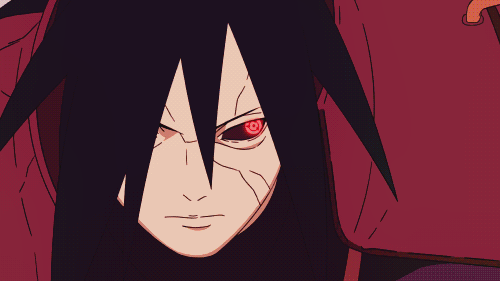
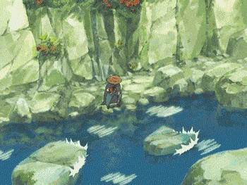

Latest Web Media Site
- 
Animation can be recorded on either analogue media, such as a flip book, motion picture film, video tape, or on digital media, including formats such as animated GIF, Flash animation or digital video. To display animation, a digital camera, computer, or projector are used along with new technologies that are produced.
Animation creation methods include the traditional animation creation method and those involving stop motion animation of two and three-dimensional objects, such as paper cutouts, puppets and clay figures. Images are displayed in a rapid succession, usually 24, 25, 30, or 60 frames per second.
